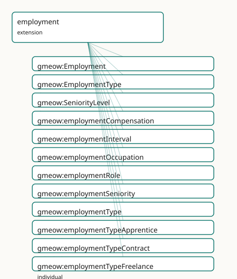

GMEOW Employment Module
- IRI: https://blackcatinformatics.ca/gmeow/slices/employment
- Tier: extension
Group: extensions
What This Slice Covers
This slice owns 21 terms and contributes 17 mapping or projection rows. Use it when its terms match the native fact you want to preserve; use the linkage tables to see how those facts leave GMEOW for consumer vocabularies.
Dependencies
gmeow:slices/entitiesgmeow:slices/kernelgmeow:slices/observationsgmeow:slices/organizationgmeow:slices/temporal
Consumers
- CV/employment claims over organization and agreements; the mail corpus's signatures.
Local Map

Terms
Classes
| Term | Label | Definition |
|---|---|---|
gmeow:Employment |
Employment | A reified employment relationship between an agent and an organization, optionally founded on an employment contract and bearing a role, compensation, and empl... |
gmeow:EmploymentType |
Employment Type | The kind of employment — a VALUE, never an Employment subclass. The set is open; a kind not among the seeds is a FRESH gmeow:EmploymentType individual carrying... |
gmeow:SeniorityLevel |
Seniority Level | The seniority or rank of an employment — a VALUE, never an Employment subclass. The set is open; a level not among the seeds is a FRESH gmeow:SeniorityLevel in... |
Properties
| Term | Label | Definition |
|---|---|---|
gmeow:employmentCompensation |
employment compensation | The monetary compensation of an employment, expressed as a MonetaryAmount with explicit currency frame (Principle 11). Non-functional: a single employment may... |
gmeow:employmentInterval |
employment interval | The time interval over which the employment holds. A relator carries its period this way (matching gmeow:participationInterval, gmeow:membershipInterval) rathe... |
gmeow:employmentOccupation |
employment occupation | The occupation associated with this employment, drawn from an open vocabulary such as ESCO or SOC. Functional: an employment maps to one canonical occupation;... |
gmeow:employmentRole |
employment role | The role borne by this employment — a job title, position, or function. Functional: an employment has one canonical role at a time; a change of role is a new e... |
gmeow:employmentSeniority |
employment seniority | The seniority level of an employment — one of the open gmeow:SeniorityLevel values. Functional: an employment has one canonical seniority at a time; a promotio... |
gmeow:employmentType |
employment type | The kind of employment — one of the open gmeow:EmploymentType values. Functional: an employment has one canonical type at a time; a change of type is a new emp... |
Individuals
| Term | Label | Definition |
|---|---|---|
gmeow:employmentTypeApprentice |
apprentice | Employment as an apprentice, combining work with structured training. |
gmeow:employmentTypeContract |
contract | Employment under a fixed-term contract. |
gmeow:employmentTypeFreelance |
freelance | Self-employed or independent contractor work. |
gmeow:employmentTypeFullTime |
full-time | Employment for the full ordinary duration of working hours. |
gmeow:employmentTypeIntern |
intern | Employment as an intern or trainee. |
gmeow:employmentTypePartTime |
part-time | Employment for less than the full ordinary duration of working hours. |
gmeow:employmentTypeVolunteer |
volunteer | Unpaid voluntary work. |
gmeow:seniorityEntry |
entry-level | An entry-level or junior position. |
gmeow:seniorityExecutive |
executive | An executive or C-level position. |
gmeow:seniorityLead |
lead | A lead or principal position. |
gmeow:seniorityMid |
mid-level | A mid-level position. |
gmeow:senioritySenior |
senior | A senior-level position. |
Linkages
- Rows: 17
- Projection profiles:
org,resume - External vocabularies:
esco,org,rdf,schema,wdt
| Source | Kind | Profile | Predicate/Relation | Target | Evidence |
|---|---|---|---|---|---|
gmeow:Employment |
equivalence | - |
skos:closeMatch | org:Role | gmeow-employment.sssom.tsv; gmeow:eqEmployment020; confidence 0.75 |
gmeow:Employment |
equivalence | - |
skos:closeMatch | schema:EmployeeRole | gmeow-employment.sssom.tsv; gmeow:eqEmployment001; confidence 0.85 |
gmeow:Employment |
equivalence | - |
skos:closeMatch | schema:OrganizationRole | gmeow-employment.sssom.tsv; gmeow:eqEmployment002; confidence 0.8 |
gmeow:Employment |
equivalence | - |
skos:relatedMatch | wdt:P108 | gmeow-employment.sssom.tsv; gmeow:eqEmployment010; confidence 0.8 |
gmeow:employmentCompensation |
equivalence | - |
skos:relatedMatch | schema:salary | gmeow-employment.sssom.tsv; gmeow:eqEmployment004; confidence 0.7 |
gmeow:employmentCompensation |
equivalence | - |
skos:closeMatch | wdt:P2250 | gmeow-employment.sssom.tsv; gmeow:eqEmployment011; confidence 0.75 |
gmeow:employmentOccupation |
equivalence | - |
skos:closeMatch | esco:occupation | gmeow-employment.sssom.tsv; gmeow:eqEmployment040; confidence 0.9 |
gmeow:employmentType |
equivalence | - |
skos:closeMatch | schema:employmentType | gmeow-employment.sssom.tsv; gmeow:eqEmployment003; confidence 0.85 |
gmeow:Employment |
projection | resume |
projects to / <= | schema:employmentType | gmeow:mapResumeEmploymentType; confidence 0.85; lossy: the EmploymentType value vocabulary individual collapses to its rdfs:label string; the structural type distinction is lost |
gmeow:Employment |
projection | resume |
projects to / <= | schema:endDate | gmeow:mapResumeEndDate; confidence 0.9; lossy: the Employment relator and interval frame collapse to a flat schema:endDate; open-ended employments (no end) emit no endDate |
gmeow:Employment |
projection | resume |
projects to / <= | schema:jobTitle | gmeow:mapResumeJobTitle; confidence 0.9; lossy: the Employment relator (organization, period, compensation, type, standpoint) collapses to a flat schema:jobTitle literal; contested employment claims are not distinguished; transform gmeow:fnMembershipToJobTitle |
gmeow:Employment |
projection | resume |
projects to / <= | schema:startDate | gmeow:mapResumeStartDate; confidence 0.9; lossy: the Employment relator (organization, role, compensation, standpoint) and the interval's temporal frame collapse to a flat schema:startDate on the projected EmployeeRole |
gmeow:Employment |
projection | resume |
projects to / <= | schema:worksFor | gmeow:mapResumeWorksFor; confidence 0.9; lossy: the Employment relator and its contested claims collapse to a flat schema:worksFor edge |
gmeow:employmentInterval |
projection | resume |
projects to / <= | schema:endDate | gmeow:mapResumeEndDate; confidence 0.9; lossy: the Employment relator and interval frame collapse to a flat schema:endDate; open-ended employments (no end) emit no endDate |
gmeow:employmentInterval |
projection | resume |
projects to / <= | schema:startDate | gmeow:mapResumeStartDate; confidence 0.9; lossy: the Employment relator (organization, role, compensation, standpoint) and the interval's temporal frame collapse to a flat schema:startDate on the projected EmployeeRole |
gmeow:employmentRole |
projection | org |
projects to / = | org:Membership, org:member, org:organization, org:role, rdf:type | gmeow:mapOrgMembership; confidence 0.95; lossy: statement-level provenance (accordingTo, validity clocks) on the membership drops |
gmeow:employmentType |
projection | resume |
projects to / <= | schema:employmentType | gmeow:mapResumeEmploymentType; confidence 0.85; lossy: the EmploymentType value vocabulary individual collapses to its rdfs:label string; the structural type distinction is lost |
Guide
Employment — tenure, compensation, and career as reified membership
Slice:
https://blackcatinformatics.ca/gmeow/slices/employment· tier: extension The ResumeRDF / Europass / schema.org / ESCO / CTDL superset layer — one relator, many projections.
Employment is not a new primitive; it is a Membership — a reified gufo:Relator
connecting an agent to an organization, optionally founded on an Agreement (Principle 4:
reuse the spine, add only the facets). The structural skeleton (member, organization,
role, period) is inherited; this slice adds the employment-specific facets — type,
compensation, seniority, occupation. Flat-first, reify on demand: a flat gmeow:memberOf
covers the 80 % case; promote to gmeow:Employment when type, compensation, seniority,
or provenance matters. Career events (hiring, promotion, transfer, resignation,
termination) are value individuals in the universal EventType vocabulary, never
subclasses (Principle 9).
The standpoint doctrine applies with full force: disputed tenure, rival role
claims, and contested terminations are standpoint-indexed claims that coexist, none
privileged (Principle 9) — two accordingTo-annotated memberOf triples, or two reified
Employment relators each carrying gmeow:accordingTo. There is no employment-specific
dispute mechanism, no primaryEmployment, no preferredJob — only the cross-cutting
facility. A withdrawn employment record sets gmeow:displayable false, never
deletion (Principle 10). Its Principle-15 consumer, declared in the manifest:
CV/employment claims over organization and agreements, and the mail corpus's
signatures — a signature block ("Jane Doe, Senior Engineer, Acme") is exactly one
flat-or-reified employment claim from the vantage of the message.
The relator
gmeow:Employment
A Membership subkind: agent, organization, and role inherited; type, compensation,
seniority, and occupation added here. Relator mediation is axiomatized (EL
someValuesFrom: an Employment has a type, a member Agent, and an Organization) so the
doctrine is reasoner-visible; closed-world cardinality belongs to SHACL
(gmeow-shapes.ttl).
gmeow:employmentInterval
The tenure: Employment → TimeInterval, matching participationInterval and
membershipInterval (relators carry their period this way; duringInterval is reserved
for gufo:Situation-based time-scoped relations). Open-ended — no end instant — when the
employment is current. Contested dates are coexisting standpoint-indexed intervals.
The facet vocabularies (Principle 9 — values, never subclasses)
gmeow:EmploymentType
The kind of employment: seeds employmentTypeFullTime, …PartTime, …Contract,
…Intern, …Freelance, …Volunteer, …Apprentice. Open: a kind not among the seeds is
a fresh individual with a label, never an Employment subclass.
gmeow:employmentType
Functional pointer to the type — one canonical type at a time. A change of type is a new employment record or a standpoint-indexed claim, never an in-place overwrite.
gmeow:SeniorityLevel
The rank: seeds seniorityEntry, seniorityMid, senioritySenior, seniorityLead,
seniorityExecutive. Deliberately orthogonal to both employment type and role — a
part-time executive and a full-time intern are both expressible without a combinatorial
class explosion.
gmeow:employmentSeniority
Functional: one canonical seniority at a time; a promotion is a new employment record or
a standpoint-indexed claim — which is also how the promotion event (an EventType
value) and the resulting record stay distinct.
The cross-slice facets
gmeow:employmentRole
The job title or function, specializing the universal gmeow:hasRole. Functional per
employment; rival role claims are rival relators, not multiple values.
gmeow:employmentOccupation
The occupation drawn from an open external vocabulary (ESCO, SOC). Functional: one canonical occupation per record; an agent with several occupations has several employment records.
gmeow:employmentCompensation
Employment → MonetaryAmount — compensation always carries its explicit currency
reference frame (Principle 11: an amount without its frame is meaningless).
Non-functional by design: raises, bonuses, and multi-currency arrangements are co-equal
standpoint-indexed claims over time, not a single overwritten salary field.
Solver layer & alignment
Career-trajectory queries — tenure overlap, gap detection, seniority progression — are
solver-layer computations over employmentInterval and the temporal slice's clocks
(Principle 12); the OWL core asserts records, not timelines. Alignment to the superset
sources (ResumeRDF, Europass, schema.org EmployeeRole, ESCO, CTDL) is the projection
layer's concern: each is a lossy down-projection of the relator, deferred until its
consumer is live.
Dependencies
Depends on kernel, entities, observations, organization (Membership, Role,
Agreement), and temporal (TimeInterval). Reuses MonetaryAmount, Occupation, Credential,
Skill, and LanguageProficiency from their home slices without redefinition.